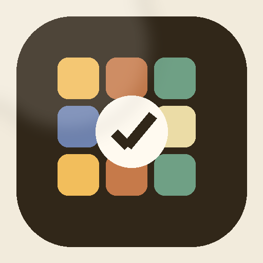

THE HABIT MOSAIC DESKTOP V12
Gemini & Windows
Không dùng cổng 3000 hay máy chủ nội bộ. Mở lại bất cứ lúc nào từ menu “Cài đặt” trên cửa sổ chính.
Google Gemini API
Khóa được lưu bằng Windows safeStorage khi hệ thống hỗ trợ.
Chạy cùng Windows
Dữ liệu V12
Đang kiểm tra lớp lưu trữ...